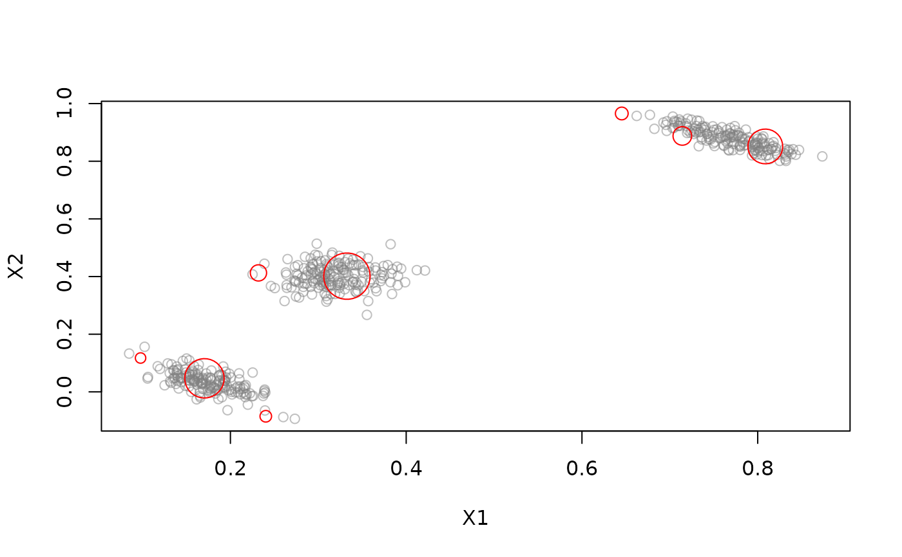
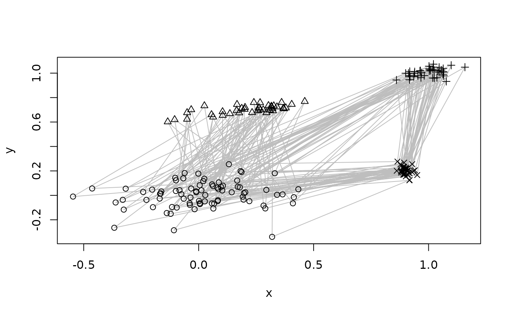
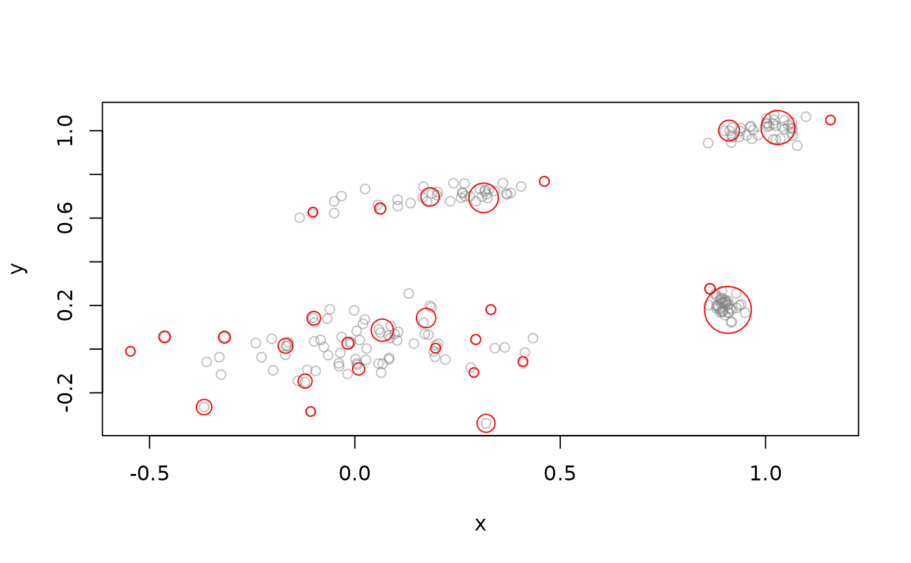
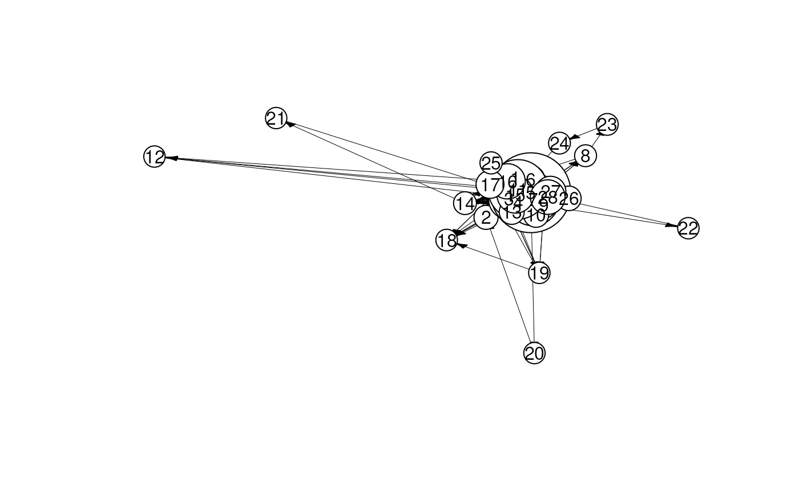
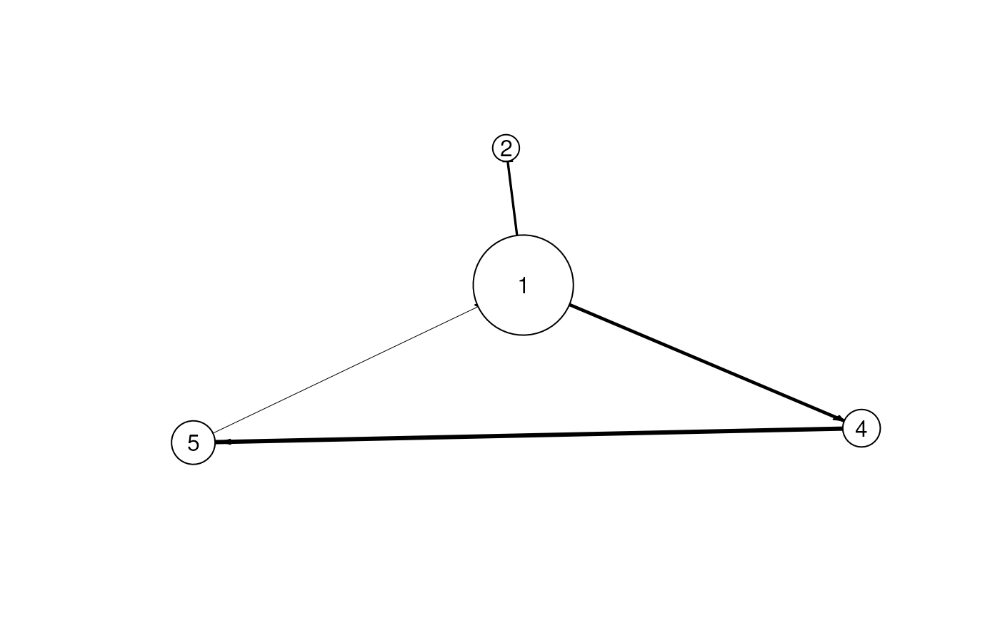
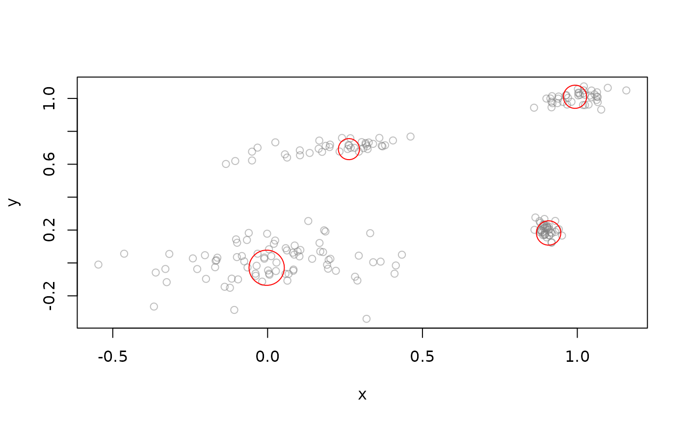

Provides Data Stream Clusterer (DSC) interfaces for EMM and tNN so they can be used in the stream framework.
Usage
DSC_EMM(
formula = NULL,
threshold = 0.2,
measure = "euclidean",
distFun = NULL,
centroids = identical(tolower(measure), "euclidean"),
lambda = 0
)
get_EMM(dsc)
set_EMM(dsc, x)
DSC_tNN(
formula = NULL,
threshold = 0.2,
measure = "euclidean",
centroids = identical(tolower(measure), "euclidean"),
lambda = 0
)Arguments
- formula
NULLto use all features in the stream or a model formula of the form~ X1 + X2to specify the features used for clustering. Only.,+and-are currently supported in the formula.- threshold
A
"numeric"with the dissimilarity threshold used by the clustering algorithm for assigning a new observation to existing clusters.- measure
A
"character"containing the name of the dissimilarity measure used (seedistin proxy for available measures).- distFun
Specify a function passed on as method to
distin proxy (seedistin proxy). The character string passed on asmeasurewill be used as the measure's name.- centroids
A
"logical"indicating if centroids are used for clusters. IfFALSE, pseudo medians (first observation of a cluster) are used to represent a cluster.- lambda
A
"numeric"specifying the rate for fading.- dsc
an object of class
"DSC_EMM".- x
an object of class
"EMM"
Details
DSC_tNN and DSC_EMM wrap the clustering algorithms so they can be used with the stream framework.
See DSC for details.
get_EMM() and set_EMM() can be used to access the EMM object inside the DSC_EMM object.
Examples
library(stream)
#>
#> Attaching package: ‘stream’
#> The following object is masked from ‘package:rEMM’:
#>
#> nclusters
### tNN clustering example
stream <- DSD_Gaussians()
stream
#> Gaussian Mixture (d = 2, k = 3)
#> Class: DSD_Gaussians, DSD_R, DSD
cl <- DSC_tNN(threshold = .1)
cl
#> Threshold Nearest Neighbor clustering
#> Class: DSC_tNN, DSC_Micro, DSC_R, DSC
#> Number of micro-clusters: 0
update(cl, stream, 100)
cl
#> Threshold Nearest Neighbor clustering
#> Class: DSC_tNN, DSC_Micro, DSC_R, DSC
#> Number of micro-clusters: 8
get_centers(cl)
#> X1 X2
#> 1 0.17045402 0.04697728
#> 2 0.33255884 0.40136096
#> 3 0.71419979 0.88774672
#> 4 0.80863360 0.85132058
#> 5 0.23191398 0.41267140
#> 6 0.64530570 0.96565039
#> 7 0.24024356 -0.08468371
#> 8 0.09777111 0.11740419
get_weights(cl)
#> 1 2 3 4 5 6 7 8
#> 26 32 8 22 6 3 2 1
plot(cl, stream)

## EMM clustering example
data("EMMsim")
plot(EMMsim_train, pch = NA)
lines(EMMsim_train, col = "gray")
points(EMMsim_train, pch = EMMsim_sequence_train)

stream <- DSD_Memory(EMMsim_train)
stream
#> Memorized Stream
#> Class: DSD_Memory, DSD_R, DSD
#> Contains 200 data points - currently at position 1 - loop is FALSE
cl <- DSC_EMM(threshold = 0.1, measure = "euclidean", lambda = .1)
update(cl, stream, n = 200)
cl
#> Extensible Markov Model
#> Class: DSC_EMM, DSC_Micro, DSC_R, DSC
#> Number of micro-clusters: 28
reset_stream(stream)
plot(cl, stream, n = 200, method = "pca")

# inspect and recluster the EMM in the DSC_EMM object
emm <- get_EMM(cl)
plot(emm)

emm <- recluster_hclust(emm, k = 4, method = "average")
plot(emm)

set_EMM(cl, emm)
reset_stream(stream)
plot(cl, stream, n = 200, method = "pca")
